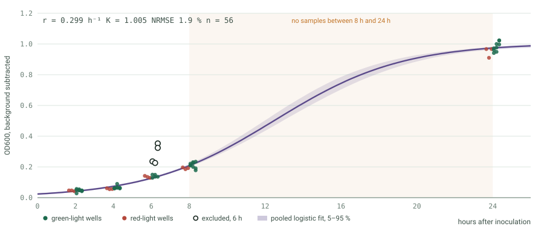
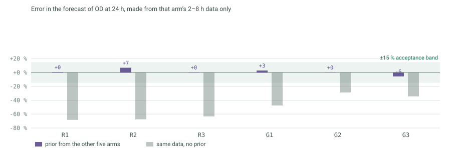

The ReLeaf BR-01 operator interface carries a logistic growth model fitted to our own light-plate run, tested on arms it was not fitted to, and re-fitted live every six minutes against an inline photometer. It scores itself, in public, on the screen.ReLeaf BR-01 操作介面內含一個邏輯斯生長模型：以我們自己的光板實驗擬合、在未參與擬合的組別上測試，並依管線內光度計每六分鐘重新擬合一次。它在畫面上公開為自己打分。
The claim, stated so it can be attacked.把主張講清楚，好讓人攻擊。
ReLeaf BR-01 is an early-stage digital twin. A process model runs beside the reactor, is re-fitted from live measurements, and is scored against forecasts it made two hours earlier. Its growth prior comes from our own data and survives a leave-one-arm-out test. The two-way link and its interlocks are written and tested against the firmware, but no run on the physical reactor has been performed with them yet, so the automated dataflow in both directions is demonstrated in software and not on hardware.ReLeaf BR-01 是一個早期階段的數位孿生。製程模型與反應器並行運作，依即時量測重新擬合，並用它兩小時前做出的預測為自己評分。生長先驗來自我們自己的數據，並通過留一組驗證。雙向連線與其連鎖保護已寫成並對韌體測試過，但尚未在實體反應器上跑過任何一次，因此雙向自動資料流目前只在軟體層面獲得驗證，還沒有在硬體上。
Fouling, crop-stress and lead-time models are not validated and say so on their own face inside the interface, each with the experiment that would falsify it.結垢、作物逆境與前置時間模型皆未驗證，介面上逐一標示，並附上足以推翻各自的實驗。
A perfusion bioreactor has to be told when to start making protein. That decision needs two things that live in different worlds: how the culture is doing now, and how the crop will be doing in two days. The software joins them and turns the answer into one switch, the green light that drives the CcaSR optogenetic system.灌流式生物反應器需要有人告訴它何時開始生產蛋白質。這個決策需要兩件分屬不同世界的資訊：菌體現在的狀態，以及作物兩天後的狀態。這套軟體把兩者接起來，並把答案化為一個開關：驅動 CcaSR 光遺傳系統的綠光。
The user is a grower, not a scientist. So the first view answers one question in one sentence, in plain words, and every reading carries a word rather than only a number. The engineering is one tap away and never in the way.使用者是農民，不是科學家。因此第一個畫面用一句白話回答一個問題，每個讀值除了數字還附上一個詞。工程細節只隔一次點擊，但不會擋路。
Pumps are set by hand.幫浦為手動設定。 Loop flow and shell flow are adjusted at the pump head, not by this software. The interface says so wherever flow appears, because a page that implies control it does not have is worse than one that admits the gap.迴路與殼側流量都在幫浦處調整，不由本軟體控制。介面在每個出現流量的地方都註明這點，因為暗示自己擁有實際上沒有的控制權，比誠實承認落差更糟。
On 19 September 2026 we ran the ACCD strain in the light plate apparatus: 150 µL per well, OD600 read on a plate reader at 2, 4, 6, 8 and 24 hours, six light arms (weak, medium and high red at n = 1 each; weak, medium and high green at n = 3 each) and one medium blank per time point. Sixty well readings, of which four were excluded and fifty-six fitted.2026 年 9 月 19 日，我們在光板裝置中培養 ACCD 菌株：每孔 150 µL，於 2、4、6、8、24 小時以孔盤判讀儀量測 OD600，共六個光照組（弱、中、強紅光各 n = 1；弱、中、強綠光各 n = 3），每個時間點一個培養基空白。六十個孔讀值，排除四個，以五十六個進行擬合。
The four excluded points are all at 6 hours and all sit above every 8-hour value of their own arm, which a batch culture cannot do. They are flagged by a robust z-score above 3.5 and reported rather than quietly dropped. Keeping them changes the growth rate from 0.299 to 0.268 h⁻¹ and the fit error from 1.9 % to 4.5 %, so the conclusions below do not turn on the exclusion.被排除的四個點全在 6 小時，且全都高於同組所有 8 小時的值，批次培養不可能如此。它們以穩健 z 分數大於 3.5 標記，並據實報告而非默默刪去。保留它們會讓生長速率由 0.299 變成 0.268 h⁻¹、擬合誤差由 1.9 % 變成 4.5 %，因此以下結論並不取決於這次排除。

The 15 % acceptance criterion is not ours: Sinner and colleagues use NRMSE below 15 % and parameter uncertainty below 40 % to accept a bioprocess model in the same volume we take the digital-twin definition from.這個 15 % 判準不是我們定的：Sinner 等人在我們引用數位孿生定義的同一本論文集中，以 NRMSE 低於 15 %、參數不確定度低於 40 % 作為接受生物製程模型的標準。
This matters because inducing production costs the cell something, and if it cost growth we would need two growth models rather than one. Across the six arms the growth rate spans 0.279 to 0.317 h⁻¹, every value within about one standard error of the others: light does not change how fast the culture grows. The plateau does differ, from 0.952 to 1.050, and an F-test comparing six separate curves against one shared curve is significant (F(15, 38) = 3.41, p = 0.001). The high-green arm reaches the highest plateau, so there is no sign of an induction burden in these data.這件事重要，是因為誘導生產對細胞有代價；若代價落在生長上，我們就需要兩個生長模型而非一個。六組的生長速率介於 0.279 至 0.317 h⁻¹，彼此皆在約一個標準誤內：光照不改變培養的生長速度。平台值確實有差，由 0.952 到 1.050，以 F 檢定比較六條獨立曲線與單一共用曲線達顯著（F(15, 38) = 3.41，p = 0.001）。強綠光組的平台最高，因此這批數據看不出誘導負擔。
Two reasons not to over-read that.兩個不宜過度解讀的理由。 Plate position, including edge wells and heating from the LEDs, would also produce a plateau difference of a few per cent, and this design cannot separate the two. The red arms are n = 1 each, so the test has little power against small effects. The defensible statement is that no large growth burden is visible, not that there is none.孔位效應，包括邊緣孔與 LED 發熱，同樣會造成幾個百分點的平台差異，而本設計無法區分兩者。紅光組各只有 n = 1，因此檢定對小效應的檢出力很低。站得住腳的說法是看不到明顯的生長負擔，而非沒有負擔。
Fitting a curve to data proves very little. So each arm was held out in turn: a prior was built from the other five, the held-out arm's 2 to 8 hour readings were used to update it, and the model then had to predict that arm's OD at 24 hours, which it had not seen.把曲線擬合到數據本身證明不了什麼。因此我們逐一保留每一組：先以另外五組建立先驗，再用被保留組 2 至 8 小時的讀值更新它，然後要求模型預測該組 24 小時的 OD，而那是它沒看過的。

looWhat this test does not show.這個測試沒有證明什麼。 The six arms grew alike, which is the finding above. So this measures reproducibility across wells of one plate on one day. It is the right shape of test and it is not yet a strong one. A second and third reactor run, ideally at different temperatures or inoculum densities, is what would make it strong.六組的生長彼此相近，這正是上面的發現。因此本測試量的是同一天、同一塊孔盤、不同孔之間的重現性。它的形式正確，但強度還不夠。要讓它變強，需要第二、第三次反應器運行，最好在不同溫度或不同接種密度下進行。
The prior above is handed to the interface. During a run, every six minutes the OD readings in that window are reduced to their median, so a bubble crossing the photometer cannot move the curve. That point is first scored against the forecast the model made two hours earlier, and only then used to re-fit. The three parameters are re-estimated by maximum a posteriori: least squares on the points so far plus a penalty for leaving the prior. Early in a run the prior dominates and the forecast band is wide; as measurements accumulate the run takes over and the band narrows.上述先驗會交給介面。運行期間，每六分鐘將該區間內的 OD 讀值取中位數，使氣泡通過光度計時無法拉動曲線。該點先與模型兩小時前做出的預測比對評分，然後才用於重新擬合。三個參數以最大後驗估計重新求解：目前所有點的最小平方，加上偏離先驗的懲罰項。運行初期由先驗主導，預測區間較寬；隨著量測累積，改由本次運行主導，區間隨之收窄。
Recursive re-estimation at a fixed interval, with a bounded search around the previous value, is the method Cabaneros Lopez and colleagues use on lignocellulosic fermentation, where they re-fit two kinetic parameters every fifteen minutes. Our interval is six minutes because our measurement is direct rather than a spectral inference.以固定間隔、在前一數值附近有界搜尋的遞迴重估，正是 Cabaneros Lopez 等人在木質纖維素發酵上採用的方法，他們每十五分鐘重估兩個動力學參數。我們採六分鐘，因為我們的量測是直接讀值，而非由光譜推論而來。
Two numbers appear on the Growth twin view while a run is going: the rolling error of those two-hour forecasts, and the fraction of measurements that landed inside the band. Automatic mode will not move the light unless both pass. That is the whole point of scoring: a model that has not earned it does not get to act.運行期間「生長孿生」畫面上會出現兩個數字：那些兩小時預測的滾動誤差，以及落在區間內的量測比例。兩者未通過時，自動模式不會動燈。這正是評分的用意：沒有掙得資格的模型，就沒有行動權。
The Arduino Uno Q has a Linux side and a microcontroller side. The Linux side serves the page and keeps the log. The microcontroller owns the sensors, the two actuators and the interlocks. The split is the safety argument: a browser crash, a closed laptop or a pulled cable cannot leave the rig in a dangerous state, because the rules that prevent that are not running in the browser.Arduino Uno Q 有 Linux 端與微控制器端。Linux 端負責供應網頁與保存記錄；微控制器端掌管感測器、兩個致動器與連鎖保護。這條分工線就是安全論證：瀏覽器當掉、筆電闔上或纜線被拔，都不會讓設備停在危險狀態，因為防止這件事的規則並不跑在瀏覽器裡。
board to page PV OD=0.412 ODC=451 PH=7.02 FLOW=263 PT1=2.69 PT3=1.31 PT4=0.45 PT5=0.35 board to page ST XV01=OPEN LIGHT=GREEN LOCK=NONE UP=1234 board to page EV IL-1 TMP 0.579 bar, valve forced open page to board SET XV01=OPEN LIGHT=GREEN page to board CAL ODBLANK=903.0 PHSLOPE=-5.700 PHOFF=21.340
Three design decisions in that block are worth defending.這段裡有三個設計決定值得說明。
PV line entirely. The page clears that reading and shows no reading, rather than freezing the last good value where an operator would keep acting on it.感測器失效時省略，不造假。讀值未通過合理性檢查的通道會整個從 PV 行中省去。介面隨即清除該讀值並顯示「無讀值」，而不是把最後一個正常值凍在畫面上，讓操作者繼續據以行動。ST line carries the actual valve and light state plus the interlock in force. When an interlock overrides a command the interface shows it and logs it, instead of inferring.板子回報實際狀態，而非收到的指令。ST 行帶有閥與燈的實際狀態，以及當下作用中的連鎖。當連鎖覆蓋指令時，介面會顯示並記錄，而不是用推測的。CAL on connect and after every recalibration. A reflashed board cannot silently run on stale numbers.校正只有一個來源。操作者在介面上校正，介面在連線時與每次重新校正後以 CAL 將常數下推。重新燒錄過的板子不會默默沿用過期數值。| Condition條件 | Action動作 | Why理由 | |
|---|---|---|---|
| IL-1 | Trans-membrane pressure above 0.50 bar while the pinch valve is shut, or the four pressure sensors cannot agree a value夾管閥關閉時跨膜壓差高於 0.50 bar，或四支壓力感測器無法得出一致值 | Valve opens, and stays open until pressure falls below 0.42 bar閥開啟，並維持到壓差降至 0.42 bar 以下 | A shut valve on a running pump is what damages the membrane. Opening is the safe direction, and the hysteresis stops it chattering.幫浦運轉時閥卻關閉，正是損壞薄膜的情況。開啟是安全方向，遲滯則避免反覆跳動。 |
| IL-2 | No SET line for 5 s連續 5 秒沒有 SET 行 |
Valve opens, light off閥開啟、燈關閉 | The page may be gone. Nothing should be driving production with no supervision.介面可能已經不在了。無人監督時不該有任何東西在驅動生產。 |
| Safe state安全狀態 | Operator presses the top-bar button操作者按下頂列按鈕 | Valve open, light off, light mode set to manual閥開啟、燈關閉、燈光模式改為手動 | One button, always in the same place, no confirmation dialog.單一按鈕、位置固定、不需二次確認。 |
| Auto | No priority-1 warning, data fresh, forecast live, and the growth model passing its accuracy test無第一級警告、數據新鮮、預報即時、且生長模型通過準確度測試 | At most one automatic light change per 30 min每 30 分鐘最多一次自動燈光變更 | Autonomy is conditional on evidence, and rate-limited so it cannot oscillate.自主權以證據為條件，並限制速率以免震盪。 |
The firmware compiles for the desktop against a stub of the Arduino hardware, runs six scenarios, and its output is fed through the page's own parser. Fifteen checks cover normal running, the over-pressure interlock and its release, link loss, an unplugged probe, a calibration push and an unknown command from a newer page. Writing this test found a real defect: the sketch called a function before declaring it, which the Arduino IDE silently tolerates and a plain compiler does not.韌體可在桌機上對照 Arduino 硬體樁程式編譯，執行六個情境，其輸出再餵入介面自己的解析器。十五項檢查涵蓋正常運轉、超壓連鎖與其解除、連線中斷、探針脫落、校正下推，以及來自較新版介面的未知指令。撰寫這個測試時找到一個真實缺陷：草稿在宣告函式前就呼叫了它，Arduino IDE 會默默容忍，一般編譯器則不會。
sh "Digital Twin/06_Firmware/test/run.sh" ... PASS 24 firmware lines, 15 checks
| View畫面 | The question it answers它回答的問題 | Written for寫給誰 |
|---|---|---|
| Today今天 | What should I do right now?現在該做什麼？ | grower農民 |
| System map系統圖 | What is the reactor doing?反應器正在做什麼？ | operator操作者 |
| Growth twin生長孿生 | What will happen, and how sure are we?會發生什麼，把握多大？ | engineer, judge工程師、評審 |
| Weather天氣 | When will the crop need protectant?作物何時需要保護劑？ | grower農民 |
| Data數據 | What happened, and can I take it away?發生過什麼，能帶走嗎？ | engineer, judge工程師、評審 |
| Setup設定 | Connect, calibrate, configure連線、校正、設定 | team團隊 |
The first view carries one sentence, such as switch the green light on now or switch on tomorrow at 14:00, with the reason underneath. Four readings follow, each labelled good, check or problem, because a grower should not have to remember that pH 6.6 is fine and pH 6.3 is not. The system map is a live schematic: sensors show their values, liquid moves along the pipes when flow is real, and tapping the pinch valve or the reservoir switches it.第一個畫面只有一句話，例如現在開啟綠光或明天 14:00 開啟，下方附上理由。接著是四個讀值，各標示良好、注意或異常，因為農民不該被要求記得 pH 6.6 沒問題而 pH 6.3 有問題。系統圖是一張即時流程圖：感測器顯示數值，有流量時液體沿管路流動，點擊夾管閥或儲液瓶即可切換。
Three light modes, and why the middle one is the default.三種燈光模式，以及為何預設是中間那個。 Manual does nothing on its own. Suggest shows the decision and waits for a person to accept it. Auto acts, but only under the conditions in the interlock table above. Suggest is the default because the lead time is not yet measured, and a controller whose time constant is unknown should not be left alone. 手動不自行動作。建議顯示決策並等待人員確認。自動會實際執行，但僅在上表連鎖條件成立時。預設為建議，因為前置時間尚未量測，而時間常數未知的控制器不應無人看管。
Every reading, every switch change and every automatic action is recorded with its cause, and exports as CSV alongside a run-info file holding the calibration, the model prior and the settings in force. That file is what lets someone reconstruct what the twin knew at the moment it acted.每個讀值、每次開關變更與每次自動動作都連同原因記錄下來，並可匯出為 CSV，另附一份運行資訊檔，內含校正、模型先驗與當時生效的設定。有了這個檔案，別人才能重建孿生在行動當下所掌握的資訊。
The interface in this repository is the running file, not a screenshot of one: open ui/0924UI.html. With no board attached it runs a simulated plant so the whole thing can be driven without hardware, and it says demo data in the top bar and on every view for as long as it does.本倉庫中的介面就是可執行的檔案，不是截圖：開啟 ui/0924UI.html。未接板子時它會以模擬製程運行，讓整套流程不需硬體即可操作，並在頂列與每個畫面持續標示示範數據。
Portela and colleagues define a digital twin as a physical asset, a virtual asset, and bidirectional connectivity between them, with the mathematical models as its heart. Gargalo and colleagues use the same dividing line to separate a twin from a digital shadow, where the automated dataflow runs one way only. Satwekar and colleagues add the five-dimension framing aligned to ISO 23247, which is the structure of the second table below.Portela 等人將數位孿生定義為：實體資產、虛擬資產，以及兩者之間的雙向連通，並以數學模型為其核心。Gargalo 等人用同一條界線區分孿生與數位影子，後者的自動資料流僅為單向。Satwekar 等人再加上對應 ISO 23247 的五維架構，也就是下方第二張表的結構。
| Test測試 | Status狀態 | Evidence證據 | |
|---|---|---|---|
| T1 | A physical asset exists存在實體資產 | pass | BR-01: hollow-fibre module, recirculation loop, reservoir with a green LED ring, seven sensors, one pinch valve.BR-01：中空纖維模組、循環迴路、環繞綠光 LED 的儲液瓶、七個感測器、一個夾管閥。 |
| T2 | A virtual asset carrying a process model虛擬資產含製程模型 | pass | Logistic growth model, re-fitted every six minutes; trans-membrane pressure and fouling soft sensors; a demand model from the weather forecast.邏輯斯生長模型，每六分鐘重擬；跨膜壓差與結垢軟感測；由天氣預報導出的需求模型。 |
| T3 | Data flows automatically from asset to model數據由資產自動流入模型 | software only | Written, and tested against firmware output on the desktop. Not yet run on the reactor.已寫成，並在桌機上對照韌體輸出測試。尚未在反應器上運行。 |
| T4 | Actions flow automatically from model to asset動作由模型自動流回資產 | software only | Same. Automatic mode is implemented and gated on model accuracy; it has not driven physical hardware.同上。自動模式已實作並以模型準確度為門檻；尚未驅動過實體硬體。 |
| T5 | Models validated on data they were not fitted to模型以非擬合數據驗證 | one model | Growth: six held-out arms, section 2. Fouling, crop stress and lead time: none.生長：六組留一驗證，見第 2 節。結垢、作物逆境與前置時間：無。 |
T1, T2 and T5 are about experiments. T3 and T4 are about a cable, and the honest status is that the cable has not been plugged in for a full run. Until it has, the defensible phrase is the one in the banner at the top of this page, and we will not use a shorter one.T1、T2 與 T5 關乎實驗；T3 與 T4 關乎一條線，而誠實的狀態是這條線還沒有接著跑完一次完整運行。在那之前，站得住腳的說法就是本頁最上方那段，我們不會用更簡短的版本。
| Dimension維度 | What ReLeaf hasReLeaf 具備的 |
|---|---|
| Physical實體 | Module, recirculation loop, reservoir with green LED, 7 sensors, pinch valve模組、循環迴路、含綠光 LED 的儲液瓶、7 個感測器、夾管閥 |
| Virtual虛擬 | Growth model with a prior and live re-fit; two soft sensors; demand model含先驗且即時重擬的生長模型；兩個軟感測；需求模型 |
| Data數據 | 1 Hz readings, 5-minute process log with units in every header, action log, run-info file, the LPA calibration set1 Hz 讀值、每 5 分鐘一列且每欄有單位的製程記錄、動作記錄、運行資訊檔、LPA 校正數據 |
| Connection連接 | Serial PV / ST / EV in, SET / CAL out; weather over HTTPS; 5-second firmware fail-safe序列 PV／ST／EV 輸入，SET／CAL 輸出；天氣走 HTTPS；韌體 5 秒失效保護 |
| Services服務 | Monitoring and warnings, OD forecast with a band, time to induction density, fouling projection, green-light scheduling, export監測與警告、含區間的 OD 預測、達誘導密度所需時間、結垢推估、綠光排程、匯出 |
Five models, down from eleven on 6 September. The yield-ceiling chain was removed rather than kept behind a caveat, because the payload it was written for is superseded and a model nobody should quote should not be on the screen at all.五個模型，少於 9 月 6 日的十一個。產量上限推算鏈被移除而非加註保留，因為它所針對的產物已被取代；一個不該被引用的模型，根本不該留在畫面上。
| Model模型 | Type類型 | Status狀態 | Falsified by推翻條件 |
|---|---|---|---|
| Growth, logistic生長，邏輯斯 | Unstructured kinetic非結構動力學 | tested, not transferred | A reactor run whose two-hour forecast error exceeds 15 %, or a growth rate outside the prior反應器運行的兩小時預測誤差超過 15 %，或生長速率落在先驗之外 |
| Trans-membrane pressure跨膜壓差 | Arithmetic on four sensors四個感測器的算術 | measured | The four transducers disagreeing at zero flow零流量時四支傳感器讀值不一致 |
| Fouling ratio結垢比 | Soft sensor, assumed resistance law軟感測，假設阻力律 | not validated | One perfusion run logging pressure over flow against time, and after cleaning一次灌流運行，記錄壓差除以流量對時間、以及清洗後的變化 |
| Crop stress index作物逆境指標 | Heuristic thresholds over FAO-56 quantities基於 FAO-56 量值的啟發式門檻 | not validated | Field plots scored low that nonetheless show measurable stress被評為低風險、卻出現可量測逆境的田區 |
| Lead time L前置時間 L | Sum of steps各步驟加總 | not measured | Measuring induction to product in our own organism在我們自己的菌株上量測從誘導到產物的時間 |
The number in the lead-time chain that is borrowed.前置時間鏈中借用的數字。 One step has a value: roughly 105 minutes to half-maximal CcaS activation. That is Castillo-Hair and colleagues, measured in a different organism at a different wavelength, not ours. The remaining steps, expression and secretion, harvest volume and application, are unmeasured, so the interface shows the chain with four cells marked to verify and uses an operator-set allowance for the rest. 其中一步有數值：CcaS 半數活化約 105 分鐘。那是 Castillo-Hair 等人在不同菌種、不同波長下量測的結果，不是我們的。其餘步驟（表現與分泌、收集體積、施用）皆未量測，因此介面將該鏈的四格標示為待驗證，其餘部分採用操作者設定的預留值。
The three cheapest things that would change the scorecard.能改變計分表的三件最省力的事。
A temperature probe, one full run on the physical reactor, and a cross-calibration of the inline photometer against the bench instrument. Together those move T3 and T4 from software-only to demonstrated, and let the plateau and starting density transfer from the light-plate prior instead of only the growth rate. The full list is in Digital Twin/07_Roadmap/FUTURE_INPUTS.md.
一支溫度探針、一次實體反應器的完整運行，以及管線內光度計對桌上型儀器的交叉校正。這三件合起來可讓 T3 與 T4 由「僅軟體」變為「已驗證」，並使平台值與起始密度也能自光板先驗轉移，而不只是生長速率。完整清單見 Digital Twin/07_Roadmap/FUTURE_INPUTS.md。
git clone https://github.com/Timmy97-TW/releaf-wiki-software open releaf-wiki-software/ui/0924UI.html # simulated plant, no hardware sh Digital\ Twin/06_Firmware/test/run.sh # firmware and protocol test
No install, no build step, no package manager. The interface is one file and runs from the filesystem. To drive a real board, open it in Chrome or Edge, which support Web Serial, and press connect.不需安裝、不需建置、不需套件管理器。介面是單一檔案，可直接從檔案系統執行。要驅動實體板子，請用支援 Web Serial 的 Chrome 或 Edge 開啟並按下連線。
03_Scripts/embed_fit_into_ui.py. Re-run the fit on your own data and re-run that script.生長先驗由 03_Scripts/embed_fit_into_ui.py 從擬合檔嵌入。用你自己的數據重跑擬合，再執行該腳本即可。read*() functions.腳位對應、連鎖門檻與感測器前端分別集中在韌體開頭與各個 read*() 函式中。Digital Twin/02_Data/20260919_OptoLPA_ACCD_Run1_ODresults.xlsx | the light-plate run, sixty well readings光板實驗，六十個孔讀值 |
Digital Twin/03_Scripts/fit_lpa_growth_20260919.py | the fit, the light test and the held-out test擬合、光照檢定與留一驗證 |
Digital Twin/04_Results/lpa_growth_fit_20260919.{md,json} | every number in section 2第 2 節的所有數字 |
Digital Twin/01_UI/0924UI.html | the interface, copied here as ui/0924UI.html介面本身，複製至此為 ui/0924UI.html |
Digital Twin/06_Firmware/releaf_br01_v2.ino | the protocol and the interlocks, copied here as firmware/協定與連鎖保護，複製至此為 firmware/ |
Digital Twin/07_Roadmap/FUTURE_INPUTS.md | the full list behind section 6第 6 節背後的完整清單 |
docs/DIGITAL_TWIN_CRITERIA.md | the written audit the scorecard follows計分表所依循的書面稽核 |
WikiHomepage/PROJECT_BRIEF.md | the rules this page was written under本頁遵循的寫作規則 |